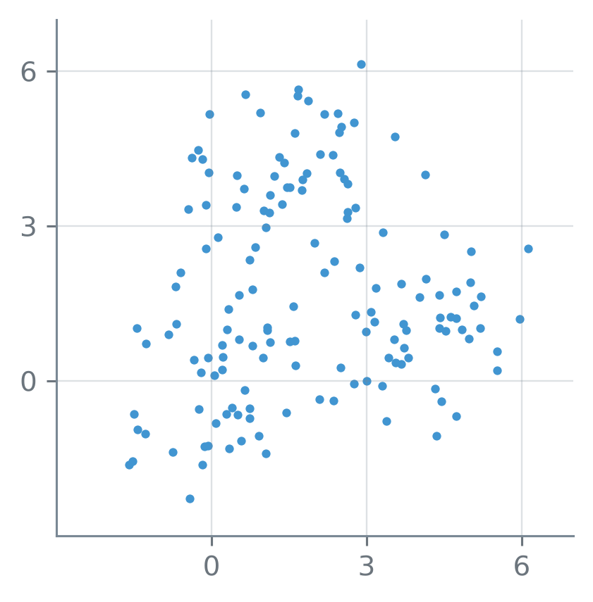
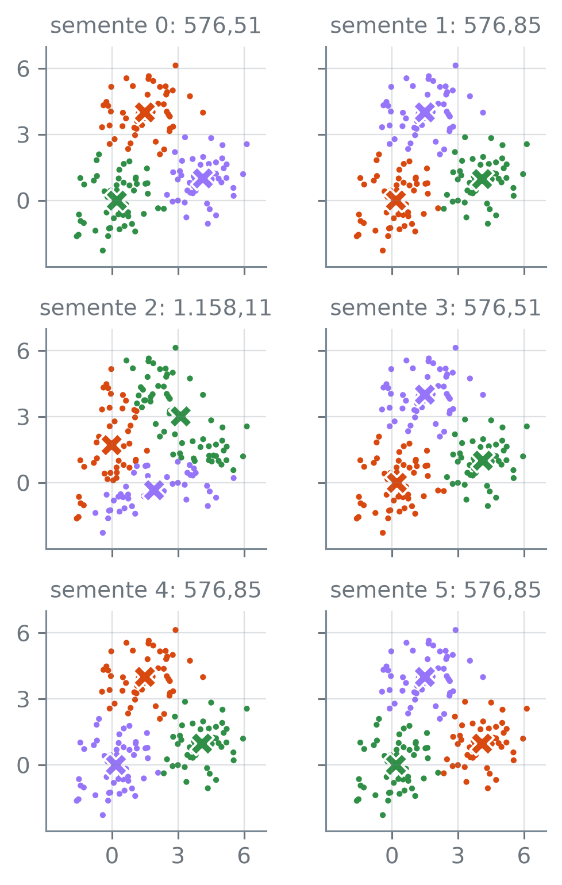

numero_br = lambda v, casas=2: (
f"{v:,.{casas}f}"
.replace(",", "_")
.replace(".", ",")
.replace("_", ".")
.replace("-", "−")
)k-Means
Nota
Esta seção corresponde à seção 12.4.1 de James et al. (2023).
Cento e cinquenta pontos no plano parecem formar três nuvens, que se tocam nas bordas. Como dividi-los em \(K\) grupos sem saber de que nuvem veio cada um? E, se o método começar de outro jeito, a divisão sai a mesma?
A função numero_br escreve os números com a pontuação brasileira:
O problema
Os pontos são simulados. Cada nuvem tem um centro, e cada ponto é o centro da sua nuvem mais um desvio sorteado, nas duas coordenadas:
import numpy as np
import pandas as pd
rng = np.random.default_rng(15)
centros = np.array(
[[0, 0], [4, 1], [1.5, 4]])
nuvem = np.repeat([0, 1, 2], 50)
desvio = rng.normal(size=(150, 2))
X = centros[nuvem] + desvio
print("forma:", X.shape)forma: (150, 2)np.random.default_rng(15)— um gerador de números aleatórios com a semente 15: toda execução sorteia os mesmos números.rng.normal(size=(150, 2))— 150 linhas e 2 colunas de sorteios da normal com média 0 e desvio padrão 1.np.repeat([0, 1, 2], 50)— cada valor repetido 50 vezes seguidas: 50 zeros, 50 uns e 50 dois.centros[nuvem]— uma linha decentrospara cada elemento denuvem: o centro da nuvem de cada ponto, 150 linhas ao todo.
Os 150 pontos, sem nenhuma indicação de nuvem:
import matplotlib.pyplot as plt
fig, ax = plt.subplots(
figsize=(3.4, 3.4))
ax.scatter(X[:, 0], X[:, 1],
s=10, linewidths=0)
ax.set_aspect("equal")
ax.set_xlim(-3, 7)
ax.set_ylim(-3, 7)
ax.set_xticks([0, 3, 6])
ax.set_yticks([0, 3, 6])
plt.show()
X, na mesma escala.
O array nuvem só serve para construir os pontos; com dado real, ele não existe. O método recebe apenas X, as duas coordenadas, e nuvem fica guardado para conferir o resultado depois.
Dividir as \(n\) observações em \(K\) grupos é escolher conjuntos \(C_1, \dots, C_K\) com os índices das observações de cada grupo, de modo que cada observação fique em exatamente um deles: se a observação \(i\) está no grupo \(k\), então \(i \in C_k\).
Cada observação \(i\) tem \(p\) valores, \(x_{i1}, \dots, x_{ip}\); aqui, \(p = 2\), as duas colunas de X. Uma divisão é boa quando os pontos de cada grupo são parecidos entre si, e a medida mais comum de quão diferentes são dois pontos é a distância euclidiana ao quadrado.
A variação dentro do grupo \(C_k\) é a soma das distâncias euclidianas ao quadrado entre todos os pares ordenados \((i, i')\) de observações do grupo, dividida pelo número \(|C_k|\) de observações dele. Os índices \(i\) e \(i'\) percorrem as observações do grupo, e cada par de pontos entra duas vezes, como \((i, i')\) e como \((i', i)\); os pares com \(i = i'\) também entram, e valem 0:
\[ \begin{aligned} W(C_k) &= \frac{1}{|C_k|} \\ &\quad \times \sum_{i,\,i' \in C_k}\sum_{j=1}^{p} (x_{ij} - x_{i'j})^2. \end{aligned} \]
O k-means, um método de agrupamento (clustering), procura a divisão em \(K\) grupos com a menor variação dentro dos grupos, somada nos \(K\):
\[ \underset{C_1, \dots, C_K}{\text{minimizar}} \ \sum_{k=1}^{K} W(C_k). \]
A soma \(\sum_k W(C_k)\) é o objetivo do k-means.
Um grupo com os pontos \((0, 0)\) e \((3, 4)\), à distância 5 um do outro, tem quatro pares ordenados. Os dois de um ponto com ele mesmo valem 0, e o par do primeiro ponto com o segundo e o do segundo com o primeiro têm distância ao quadrado 25 cada: \(W = (0 + 25 + 25 + 0)/2 = 25\). Um grupo de três pontos no mesmo lugar tem \(W = 0\).
A conta do objetivo segue a definição: em cada grupo, as distâncias entre todos os pares, ao quadrado, somadas e divididas pelo tamanho do grupo. Ela vale para qualquer divisão. Aqui, ela se aplica a duas divisões: a das nuvens, que o método não conhece, e uma com rótulos 0, 1 e 2 sorteados ao acaso. Qual das duas deve ter o objetivo menor?
from sklearn.metrics import (
pairwise_distances)
def objetivo(X, rotulos):
total = 0
for k in np.unique(rotulos):
A = X[rotulos == k]
d = pairwise_distances(A)
soma = (d**2).sum()
total += soma / len(A)
return total
ger = np.random.default_rng(15)
sorteio = ger.integers(0, 3, 150)
obj_nuv = objetivo(X, nuvem)
obj_sort = objetivo(X, sorteio)
print("objetivo das nuvens:",
numero_br(obj_nuv))
print("objetivo do sorteio:",
numero_br(obj_sort))
ct = pd.crosstab(nuvem, sorteio)
mistura = (ct > 0).all().all()
print("3 nuvens por grupo",
"sorteado:", bool(mistura))objetivo das nuvens: 614,88
objetivo do sorteio: 2.228,95
3 nuvens por grupo sorteado: Truepairwise_distances(A), do módulosklearn.metrics— a tabela das distâncias euclidianas entre as linhas deA, duas a duas: o elemento \((i, i')\) é a distância entre a linha \(i\) e a linha \(i'\). Somar a tabela inteira é somar sobre os pares ordenados.np.unique(rotulos)— os valores distintos derotulos, em ordem.X[rotulos == k]— só as linhas deXem que o rótulo ék.ger.integers(0, 3, 150)— 150 inteiros sorteados entre 0 e 2; o 3 fica de fora.pd.crosstab(a, b)— conta quantas observações há em cada combinação de um valor dea, nas linhas, com um valor deb, nas colunas.(ct > 0).all().all()—Truequando nenhuma contagem é zero: o primeiroallconfere cada coluna, e o segundo junta as colunas.
A divisão das nuvens tem objetivo 614,88, e a sorteada, 2.228,95. Com rótulos ao acaso, cada grupo sorteado tem pontos das três nuvens, e os pares de pontos distantes pesam no objetivo.
Para achar a divisão de menor objetivo, bastaria calcular o objetivo de todas? Cada um dos 150 pontos pode ir para qualquer dos 3 grupos:
total = 3**150
print("algarismos de 3^150:",
len(str(total)))
sem_nome = total // 6
print("dividido por 6:",
len(str(sem_nome)))algarismos de 3^150: 72
dividido por 6: 71São \(3^{150}\) maneiras de pôr os rótulos, um número de 72 algarismos. Duas maneiras que só trocam os nomes dos grupos dão a mesma divisão; descontadas essas trocas, sobra perto de \(3^{150}/6\), ainda um número de 71 algarismos. Com \(n\) observações e \(K\) grupos, o número de divisões cresce como \(K^n\), e só é pequeno quando \(K\) e \(n\) são minúsculos. Nenhum computador as percorre todas.
O KMeans, do scikit-learn, procura uma divisão de objetivo pequeno sem percorrer todas. Por padrão, ele começa de centroides escolhidos entre os próprios pontos, e não de rótulos sorteados como no algoritmo descrito adiante; as voltas seguintes são as mesmas. Com \(K = 2\), \(3\) e \(4\), o objetivo e os tamanhos dos grupos:
from sklearn.cluster import KMeans
modelos = {}
objetivos = []
print("K: objetivo · tamanhos")
for K in [2, 3, 4]:
km = KMeans(n_clusters=K,
n_init=20,
random_state=15)
km.fit(X)
modelos[K] = km
obj = objetivo(X, km.labels_)
objetivos.append(obj)
tam = np.sort(
np.bincount(km.labels_))
print(f"{K}:", numero_br(obj),
"·", *tam)
quedas = np.diff(objetivos)
cai = np.all(quedas < 0)
print("cai a cada K:", bool(cai))K: objetivo · tamanhos
2: 1.342,12 · 58 92
3: 576,51 · 46 52 52
4: 474,15 · 26 30 47 47
cai a cada K: TrueKMeans(n_clusters=K, n_init=20, random_state=15), do módulosklearn.cluster— o k-means comKgrupos. O algoritmo depende de um começo sorteado:n_init=20o roda a partir de 20 começos e fica com o de menor objetivo, erandom_statefixa a semente dos sorteios.km.fit(X)— divide as linhas deXem grupos.km.labels_— o rótulo do grupo de cada linha, um inteiro de 0 aK − 1.np.bincount(arr)— quantas vezes aparece cada inteiro 0, 1, 2, … dearr: aqui, o tamanho de cada grupo.np.sort(arr)— os valores em ordem crescente. Os rótulos não têm ordem, e os tamanhos, ordenados, não dependem de qual grupo recebeu qual rótulo.
O objetivo cai a cada grupo a mais: de 1.342,12 com dois grupos para 576,51 com três e 474,15 com quatro. Na melhor divisão, isso vem da construção: com um grupo a mais, dá para partir um grupo em dois sem aumentar o objetivo, como a parte sobre o algoritmo mostra. Por isso a melhor divisão com \(K + 1\) grupos nunca tem objetivo maior que a melhor com \(K\). O objetivo não serve, então, para escolher \(K\), e a seção 15.6 volta a essa escolha.
As três divisões, lado a lado:
cores = np.array(
["C1", "C2", "C3", "0.45"])
def painel(ax, rotulos=None,
centr=None, tam=110):
cor = ("C0" if rotulos is None
else cores[rotulos])
ax.scatter(X[:, 0], X[:, 1],
s=7, c=cor, linewidths=0)
if centr is not None:
k = len(centr)
ax.scatter(centr[:, 0],
centr[:, 1], s=tam,
marker="X",
c=cores[:k],
edgecolors="white")
ax.set_aspect("equal")
ax.set_xlim(-3, 7)
ax.set_ylim(-3, 7)
ax.set_xticks([0, 3, 6])
ax.set_yticks([0, 3, 6])
fig, eixos = plt.subplots(
1, 3, figsize=(3.8, 1.8),
sharey=True)
for ax, K in zip(eixos,
[2, 3, 4]):
km = modelos[K]
painel(ax, km.labels_,
km.cluster_centers_)
ax.set_title(f"K = {K}")
plt.tight_layout()
plt.show()
X.
ax.scatter(..., c=cores[rotulos])— uma cor por ponto:cores[rotulos]troca cada rótulo pela cor da posição dele na lista.marker="X"desenha um X cheio, eedgecolors="white", o contorno branco que o separa dos pontos.km.cluster_centers_— o centroide de cada grupo, uma linha por grupo;centr[:, 0]ecentr[:, 1]são as duas coordenadas deles.sharey=True— os três gráficos dividem o eixo vertical.
Com \(K = 3\), os grupos batem com as nuvens? Os rótulos do KMeans são nomes arbitrários, e o rótulo 0 dele não tem nada a ver com a nuvem 0. A comparação se faz numa tabela cruzada, com as nuvens nas linhas e os grupos nas colunas:
km3 = modelos[3]
tabela = pd.crosstab(nuvem,
km3.labels_,
rownames=["nuvem"],
colnames=["grupo"])
print(tabela)
maior = tabela.max(axis=1)
print("maioria em cada nuvem:",
bool((maior > 25).all()))
dono = tabela.idxmax(axis=1)
print("grupos da maioria",
"distintos:",
dono.nunique() == 3)
print("fora da maioria da nuvem:",
150 - maior.sum())
obj3 = objetivo(X, km3.labels_)
menor = obj3 < obj_nuv
print("menor que o das nuvens:",
bool(menor))grupo 0 1 2
nuvem
0 1 49 0
1 2 2 46
2 49 1 0
maioria em cada nuvem: True
grupos da maioria distintos: True
fora da maioria da nuvem: 6
menor que o das nuvens: Truepd.crosstab(..., rownames, colnames)—rownamesecolnamesdão o nome das linhas e das colunas da tabela cruzada.tabela.max(axis=1)— o maior valor de cada linha.tabela.idxmax(axis=1)— a coluna em que está o maior valor de cada linha: o grupo que fica com a maior parte de cada nuvem..nunique()— quantos valores distintos há.
Cada nuvem tem um grupo com a maioria dos seus pontos, os três grupos são diferentes, e 6 dos 150 pontos ficam fora do grupo da maioria da sua nuvem. O k-means errou esses 6? Para cada um, a distância ao quadrado até o centroide do grupo em que ficou e até o centroide do grupo da maioria da sua nuvem:
C = km3.cluster_centers_
dono_pt = dono.to_numpy()[nuvem]
seu = C[km3.labels_]
maj = C[dono_pt]
d_seu = ((X - seu)**2).sum(axis=1)
d_maj = ((X - maj)**2).sum(axis=1)
fora_m = km3.labels_ != dono_pt
perto = (d_seu < d_maj)[fora_m]
n_fora = fora_m.sum()
print(f"os {n_fora} fora",
"da maioria:")
print(" perto do próprio",
"centroide:",
bool(perto.all()))os 6 fora da maioria:
perto do próprio centroide: TrueC[km3.labels_]— o centroide do grupo de cada ponto, comocentros[nuvem]fez com o centro da nuvem;dono.to_numpy()[nuvem], do mesmo jeito, dá a cada ponto o grupo da maioria da sua nuvem.(d_seu < d_maj)[fora_m]— compara, ponto a ponto, as duas distâncias, e o[fora_m]fica só com os 6 pontos fora da maioria.
Não: o objetivo da divisão do k-means é menor que o da divisão das nuvens, e cada um desses pontos está mais perto do centroide do grupo em que ficou do que do centroide do grupo da maioria da sua nuvem.
O algoritmo
Como achar uma divisão boa sem percorrer todas? O algoritmo é curto:
- Sorteie para cada observação um rótulo entre os \(K\) possíveis. É a divisão inicial.
- Repita até a divisão parar de mudar:
- Para cada grupo, calcule o centroide, o ponto cujas coordenadas são as médias das \(p\) colunas nas observações do grupo.
- Mude cada observação para o grupo do centroide mais próximo, pela distância euclidiana.
O nome vem do passo 2(a): cada grupo é resumido pela média, mean, dos seus pontos. O passo 2(a), à mão, sobre os rótulos já sorteados em sorteio (o passo 1):
tabela_X = pd.DataFrame(X)
cent1 = (tabela_X
.groupby(sorteio).mean()
.to_numpy())
d_cent = pairwise_distances(cent1)
print("centroides, maior",
"distância:",
numero_br(d_cent.max()))
d_nuv = pairwise_distances(
centros)
pos = d_nuv[d_nuv > 0]
print("nuvens, menor distância:",
numero_br(pos.min()))centroides, maior distância: 0,42
nuvens, menor distância: 3,91df.groupby(rotulos).mean()— separa as linhas da tabela pelo valor derotulose tira a média de cada coluna dentro de cada grupo: uma linha por grupo, com as médias.
Como cada grupo sorteado tem pontos das três nuvens, as médias saem quase iguais: a maior distância entre dois centroides é 0,42, e a menor entre os centros de duas nuvens, 3,91. Agora o passo 2(b):
from sklearn.metrics import (
pairwise_distances_argmin)
rot1 = pairwise_distances_argmin(
X, cent1)
mudaram = (rot1 != sorteio).sum()
print("mudaram de grupo:",
mudaram)
print("objetivo:",
numero_br(obj_sort), "→",
numero_br(objetivo(X, rot1)))mudaram de grupo: 89
objetivo: 2.228,95 → 1.118,51pairwise_distances_argmin(X, cent1)— para cada linha deX, a posição da linha decent1mais próxima dela: o rótulo do centroide mais perto de cada ponto.(rot1 != sorteio).sum()— quantos pontos têm o rótulo novo diferente do antigo; cadaTrueconta 1.
Com os centroides quase juntos, 89 dos 150 pontos trocam de grupo, e o objetivo cai de 2.228,95 para 1.118,51. Mais uma volta, com os centroides dos grupos novos:
cent2 = (tabela_X
.groupby(rot1).mean()
.to_numpy())
rot2 = pairwise_distances_argmin(
X, cent2)
mudaram = (rot2 != rot1).sum()
print("mudaram de grupo:",
mudaram)
print("objetivo:",
numero_br(objetivo(X, rot2)))mudaram de grupo: 18
objetivo: 976,23Na segunda volta mudam só 18 pontos, e o objetivo cai para 976,23. Daqui em diante, o KMeans repete as voltas até a divisão parar de mudar. Com init=cent1, ele parte dos mesmos centroides do passo 2(a):
km_mao = KMeans(n_clusters=3,
init=cent1, n_init=1)
km_mao.fit(X)
print("voltas:", km_mao.n_iter_)
rot_f = km_mao.labels_
final = objetivo(X, rot_f)
print("objetivo final:",
numero_br(final))
passos = [obj_sort,
objetivo(X, rot1),
objetivo(X, rot2), final]
subiu = np.any(
np.diff(passos) > 0)
print("subiu em algum passo:",
bool(subiu))voltas: 7
objetivo final: 576,85
subiu em algum passo: FalseKMeans(n_clusters=3, init=cent1, n_init=1)— o k-means a partir dos centroides dados eminit, em vez de sorteá-los; com um começo fixo, só há um começo a rodar, en_init=1diz isso.km.n_iter_— quantas voltas do passo 2 o algoritmo deu até parar.np.any(arr)—Truequando ao menos um elemento éTrue.
São 7 voltas ao todo, e o objetivo termina em 576,85. Nas quatro divisões, a sorteada, as duas obtidas nas voltas feitas à mão e a final, o objetivo não subiu em nenhum passo. A figura mostra as mesmas etapas:
titulos = ["passo 1",
"passo 2(a)", "passo 2(b)",
"volta 2, 2(a)",
"volta 2, 2(b)", "final"]
rots = [sorteio, sorteio, rot1,
rot1, rot2, km_mao.labels_]
cents = [None, cent1, cent1,
cent2, cent2,
km_mao.cluster_centers_]
juntos = [240, 150, 70]
tams = [110, juntos, juntos,
110, 110, 110]
fig, eixos = plt.subplots(
3, 2, figsize=(3.8, 5.6),
sharex=True, sharey=True)
for i in range(6):
ax = eixos.flat[i]
painel(ax, rots[i], cents[i],
tams[i])
ax.set_title(titulos[i],
fontsize=10)
plt.tight_layout()
plt.show()![Seis gráficos de dispersão em grade de 3 linhas por 2 colunas, com os mesmos 150 pontos. No passo 1, os pontos laranja, verdes e roxos se misturam nas três nuvens. No passo 2(a), a mesma mistura, com três X de tamanhos diferentes quase encostados um no outro, no meio dos pontos. No passo 2(b), com os mesmos X, os pontos se dividem em três fatias de cor que saem do meio, uma para cada X, e que não coincidem com as nuvens. Na segunda volta, os X se afastam uns dos outros, e as fatias de cor passam a se parecer mais com as nuvens. No final, cada nuvem tem a sua cor, com o X da cor no meio dela.](04-k-means_files/figure-html/fig-passos-output-1.png)
X.
Por que o objetivo nunca sobe? A variação dentro do grupo, definida pelos pares, tem uma segunda forma, pela distância de cada ponto ao centroide \(\bar{x}_k\) do grupo:
\[ \begin{aligned} &\frac{1}{|C_k|} \\ &\quad \times \sum_{i,\,i' \in C_k}\ \sum_{j=1}^{p} (x_{ij} - x_{i'j})^2 \\ &\quad = 2 \sum_{i \in C_k}\ \sum_{j=1}^{p} (x_{ij} - \bar{x}_{kj})^2, \end{aligned} \]
em que \(\bar{x}_{kj}\) é a média da coluna \(j\) no grupo \(k\). O 2 vem dos pares ordenados: cada par de pontos entra duas vezes na soma da esquerda. A soma da direita, sem o 2 e somada nos \(K\) grupos, é o que o KMeans guarda no atributo inertia_, a inércia. O objetivo é, então, o dobro da inércia. Na divisão final:
inercia = km_mao.inertia_
print("inércia:",
numero_br(inercia))
print("objetivo pelos pares:",
numero_br(final))
dobro = np.isclose(final,
2 * inercia)
print("objetivo = 2 × inércia:",
bool(dobro))inércia: 288,42
objetivo pelos pares: 576,85
objetivo = 2 × inércia: Truekm.inertia_— a inércia: a soma, em todos os pontos, da distância ao quadrado até o centroide do próprio grupo.
A inércia é 288,42, e o objetivo, 576,85, o dobro dela a menos do arredondamento da última casa.
Para ver por que nenhum passo aumenta o objetivo, chame de \(S\) a soma, em todos os pontos, da distância ao quadrado de cada ponto ao centroide que ele está usando, seja qual for esse centroide. Quando os centroides são as médias dos grupos, \(S\) é a inércia, e o objetivo vale \(2S\). Três valores de \(S\): com o sorteio e os centroides dele, depois do passo 2(b) da primeira volta e depois do passo 2(a) da segunda:
def S(rotulos, centr):
dif = X - centr[rotulos]
return (dif**2).sum()
s_a = S(sorteio, cent1)
s_b = S(rot1, cent1)
s_c = S(rot1, cent2)
print("S, sorteio e cent1:",
numero_br(s_a))
print("S, rot1 e cent1:",
numero_br(s_b))
print("S, rot1 e cent2:",
numero_br(s_c))
print("S só desceu:",
bool(s_a > s_b > s_c))S, sorteio e cent1: 1.114,47
S, rot1 e cent1: 996,80
S, rot1 e cent2: 559,25
S só desceu: TrueNo passo 2(b), os centroides ficam fixos. Cada ponto só troca o seu centroide por um mais perto, e \(S\) cai de 1.114,47 para 996,80.
No passo 2(a), a divisão fica fixa, e cada centroide vira a média do seu grupo. A média é o ponto que torna mínima a soma das distâncias ao quadrado até os pontos do grupo. Com os números 0, 1 e 5, de média 2, essa soma é \(4 + 1 + 9 = 14\) até a média, \(1 + 0 + 16 = 17\) até o 1 e \(9 + 4 + 4 = 17\) até o 3. Como cada centroide novo é a média do seu grupo, \(S\) cai de novo, para 559,25, a inércia da divisão nova.
A cadeia vale em toda volta: a inércia nova não passa de \(S\) com os centroides velhos, que não passa da inércia velha. Como o objetivo é o dobro da inércia, ele também nunca sobe. É o mesmo fato que explica por que o objetivo cai com \(K\): usar a média de cada parte de um grupo nunca soma mais que usar a média do grupo inteiro.
Quando nenhum ponto muda, a divisão está parada num ótimo local: nenhum passo do algoritmo a melhora, mas outra divisão ainda pode ter objetivo menor.
Ótimos locais
O algoritmo que partiu de sorteio parou com objetivo 576,85, e o KMeans com 20 começos, na tabela de \(K = 2\), \(3\) e \(4\), chegou a 576,51, um pouco menos. O resultado depende do sorteio do passo 1. Com seis sorteios diferentes, de sementes 0 a 5, quantos resultados diferentes aparecem?
seis = []
print("semente: objetivo",
"· tamanhos")
for s in range(6):
g = np.random.default_rng(s)
rot = g.integers(0, 3, 150)
cent = (tabela_X.groupby(rot)
.mean().to_numpy())
km = KMeans(n_clusters=3,
init=cent, n_init=1)
km.fit(X)
seis.append(km)
obj = 2 * km.inertia_
tam = np.sort(
np.bincount(km.labels_))
print(f"{s}:", numero_br(obj),
"·", *tam)
objs = [2 * km.inertia_
for km in seis]
distintos = np.unique(
np.round(objs, 2))
print("objetivos distintos:",
len(distintos))
t2 = pd.crosstab(nuvem,
seis[2].labels_).to_numpy()
por_col = np.sort(t2, axis=0)
seg = np.sort(por_col[-2])
print("semente 2, pontos da 2.ª")
print(" nuvem de cada grupo:",
*seg)semente: objetivo · tamanhos
0: 576,51 · 46 52 52
1: 576,85 · 47 51 52
2: 1.158,11 · 42 44 64
3: 576,51 · 46 52 52
4: 576,85 · 47 51 52
5: 576,85 · 47 51 52
objetivos distintos: 3
semente 2, pontos da 2.ª
nuvem de cada grupo: 18 18 31np.round(arr, 2)— arredonda cada valor a 2 casas, para que objetivos que só diferem depois da segunda casa contem como um só.np.sort(t2, axis=0)— ordena cada coluna da tabela cruzada, a contagem de cada nuvem num grupo; a penúltima linha,[-2], é a segunda maior contagem de cada grupo.
O número impresso é o objetivo, o dobro da inércia. Os seis começos param em três ótimos locais diferentes. Dois deles, de objetivo 576,51 e 576,85, quase se confundem, com tamanhos de grupo quase iguais.
O terceiro, o da semente 2, de objetivo 1.158,11, é outra divisão, com um grupo de 64 pontos e dois menores, e cada grupo tem ao menos 18 pontos de uma segunda nuvem:
fig, eixos = plt.subplots(
3, 2, figsize=(3.8, 5.6),
sharex=True, sharey=True)
for s in range(6):
ax = eixos.flat[s]
km = seis[s]
painel(ax, km.labels_,
km.cluster_centers_)
obj = 2 * km.inertia_
tit = f"semente {s}: "
tit += numero_br(obj)
ax.set_title(tit, fontsize=10)
plt.tight_layout()
plt.show()
X.
Como o algoritmo para num ótimo local, a saída é rodá-lo a partir de vários começos e ficar com o resultado de menor objetivo. É o que faz o argumento n_init. Quantos começos o KMeans roda se ninguém disser?
padrao = KMeans(n_clusters=3)
print("n_init padrão:",
padrao.n_init)
inerc_um = [KMeans(n_clusters=3,
n_init=1, random_state=s)
.fit(X).inertia_
for s in range(20)]
objs_um = np.unique(np.round(
2 * np.array(inerc_um), 2))
print("um começo, 20 sementes:")
print(" objetivos distintos:",
len(objs_um))
km50 = KMeans(n_clusters=3,
n_init=50, random_state=15)
km50.fit(X)
obj50 = 2 * km50.inertia_
print("50 começos:",
numero_br(obj50))
igual = np.isclose(obj50,
min(objs))
print("igual ao menor dos seis:",
bool(igual))
t50 = pd.crosstab(nuvem,
km50.labels_)
dono50 = t50.idxmax(axis=1)
print("nuvens em grupos",
"distintos:",
dono50.nunique() == 3)
print("fora da maioria:",
150 - t50.max(axis=1).sum())n_init padrão: auto
um começo, 20 sementes:
objetivos distintos: 2
50 começos: 576,51
igual ao menor dos seis: True
nuvens em grupos distintos: True
fora da maioria: 6n_init="auto"— o padrão doKMeans: com a inicialização padrão,init="k-means++", roda um começo só. Ok-means++não sorteia rótulos: sorteia os centroides iniciais entre os próprios pontos, dando mais chance aos pontos distantes dos centroides já escolhidos.KMeans(...).fit(X).inertia_— ofitdevolve o próprio modelo, e dá para ler a inércia na mesma linha.
Mesmo com o k-means++, um começo por semente dá 2 objetivos diferentes em 20 sementes. Com 50 começos, o objetivo é 576,51, o menor dos seis sorteios.
Outra divisão ainda pode ter objetivo menor. Passe sempre n_init e random_state ao KMeans: o primeiro dá vários começos, e o segundo faz o resultado se repetir a cada execução.
Aviso
O k-means recebe \(K\) de fora e devolve \(K\) grupos mesmo quando o dado não tem grupo nenhum. A distância euclidiana soma as colunas como vêm, e uma coluna de valores grandes manda mais que as outras. E os grupos que ele forma tendem a ser compactos, em torno de um centro. A seção 15.6 trata da escala das colunas, da escolha de \(K\) e de como conferir se os grupos se sustentam.
A divisão dos 150 pontos em \(K\) grupos é definida pelo objetivo, e o k-means procura uma boa alternando médias e reatribuições. O resultado não é sempre o mesmo: depende do começo, e seis sorteios deram três ótimos locais. Com 50 começos, fica o de menor objetivo, que aqui põe cada nuvem num grupo diferente, com 6 dos 150 pontos fora do grupo da maioria da sua nuvem.
James, Gareth, Daniela Witten, Trevor Hastie, Robert Tibshirani, e Jonathan Taylor. 2023. An Introduction to Statistical Learning with Applications in Python. Springer.